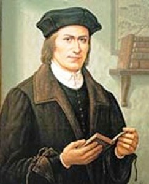
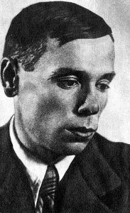
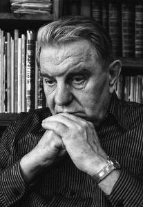
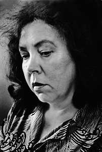
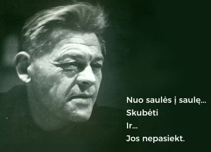
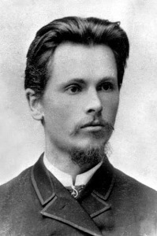
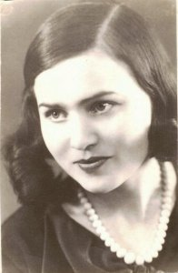
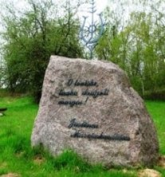

| Lietuvos rašytojai ir poetai | ||||||
|---|---|---|---|---|---|---|
| Martynas Mažvydas | Jonas Aistis |
Justinas Marcinkevičius |
Janina Degutytė | Paulius Širvys | Vincas Kudirka | Salomėja Nėris |
|  |  |  |  |  |  |  |
Lietuvių rašytojas, pirmosios lietuviškos knygos „Katekizmas" autoriusBiografijaMartynas Mažvydas Vaitkūnas gimė 1520 m. Ragainėje (Mažoji Lietuva) M.Mažvydas jaunystėje mokėsi ir dirbo Vilniuje, kartu kurdamas ryšius ir bendradarbiaudamas su pirmųjų lietuviškųjų raštų kūrėjais iš Lietuvos Didžiosios Kunigaikštystes. Baigęs universitetą ir išleidęs svarbiausią gyvenimo darbą Mažvydas 1549 m. buvo paskirtas būti Ragainės klebonu, vėliau – arkidiakonu.
Kitos knygos publikuotos jau po M. Mažvydo mirties:
Mirė 1563 m. |
Lietuvių lyrikas, eseistas, eleginio, melodingo eilėraščio kūrėjasGimė 1904 m. liepos 7 d. Kampiškėse (Kauno apskr.) Alma materVDU, 1936 m. Grenoblio universitetas Eilėraščių rinkiniai
Kita
Mirė 1973 m. birželio 13 d. (Vašingtonas, JAV) |
Poetas, dramaturgas, akademikas, vertėjas, visuomenės veikėjasBiografijaGimė 1930 m. kovo 10 d. Važatkiemyje, Prienų r. Mokėsi Prienų „Žiburio“ gimnazijoje. Baigė Vilniaus universiteto istorijos–filologijos fakultetą. Kurį laiką dirbo redakcijose. Just. Marcinkevičius į Lietuvos dramaturgijos ir teatro istoriją įėjo savo trilogija: „Mindaugas“, „Katedra“, „Mažvydas“. Akmuo J. Marcinkevičius tėviškėje Mirė 2011 m. vasario 16 d. Vilniuje |
Lietuvių poetė, vėlyvosios lyrikos romantikė, eilėraščių vaikams autorė.BiografijaGimė Žemuosiuose Šančiuose 1928m. liepos 6d. Mokėsi Kauno VII gimnazijoje. Poezijos rinkiniai:
Mirė 1990 vasario 6d. Vilniuje |
Poetas, žurnalistas, redaktoriusBiografijaGimė 1920 m. rugsėjo 6 d. Padustėlyje (dabar Zarasų raj.) 1940 m. baigė Salų miestelio žemės ūkio mokyklą. 1940–1941 m. mokėsi Vilniaus Vilniaus pėstininkų karo mokykloje. Po karo P.Širvys dirbo redaktoriumi keliuose regioniniuose laikraščiuose, 1954–1955 m. dirbo „Literatūra ir menas“. 1957 m. baigė literatūros studijas Maksimo Gorkio literatūros institute. Po to dirbo reporteriu žurnaluose „Moksleivis“ ir „Genys“. DarbasAnkstyvieji Pauliaus Širvio žodžiai buvo skirti karo patirčiai ir tėvynės gynybai nuo priešų. P. Širvio kūryba išleista keturiais rinkiniais:
ApdovanojimaiLietuvos TSR valstybinė premija. Mirė 1979 m. kovo 27 d.(58 metai) Vilniuje. |
Lietuvos gydytojas, prozininkas, poetas, publicistas, kritikas, vertėjas, varpininkas, laikraščio „Varpas" redaktorius, vienas iš lietuvių tautinio sąjūdžio ideologų.Biografija1858 m. gruodžio 31 d. Paežeriuose (Vilkaviškio apskr.) Mokėsi Paežerių pradžios mokykloje, kur pasižymėjo visokeriopais gabumais. 1871 metais baigęs pradžios mokyklą, įstojo į Marijampolės gimnaziją. V.Kudirka sidabro medaliu baigė gimnaziją, išvyko studijuoti į Varšuvos universitetą, istorijos–filologijos fakultetą, vėliau perėjo į medicinos fakultetą. Vincas Kudirka buvo tas žmogus, kuris nuolat kėlė valstybę. Juk, kai jis sukūrė himną, tokios valstybės kaip Lietuva nė nebuvo žemėlapyje. Mirė: 1899 m. lapkričio 16 d. |
Poetė, mokytojaBiografijaGimė 1904 m. lapkričio 17 d. Kiršiuose, Alvito valsčius (Vilkaviškio raj.) Mokslų ir kūrybos pradžia1924 m. įstojo į Lietuvos universitetą, studijavo lietuvių literatūrą, vokiečių kalbą ir literatūrą, pedagogiką–psichologiją. Dalyvavo ateitininkų meno draugijos „Šatrija“ veikloje. Nuo 1930 m. dirbo Seinų „Žiburio“ gimnazijos lietuvių bei vokiečių kalbų mokytoja, vėliau persikelia mokytojauti į Panevėžį. 1936 m. išvyksta į Paryžių studijuoti prancūzų kalbos. Žymiausi darbai:„Eglė Žalčių karalienė“, rinkinys „Diemedžiu žydėsiu“ ir kt. Mirė 1945 m. liepos 7 d. Maskva (Rusija) |